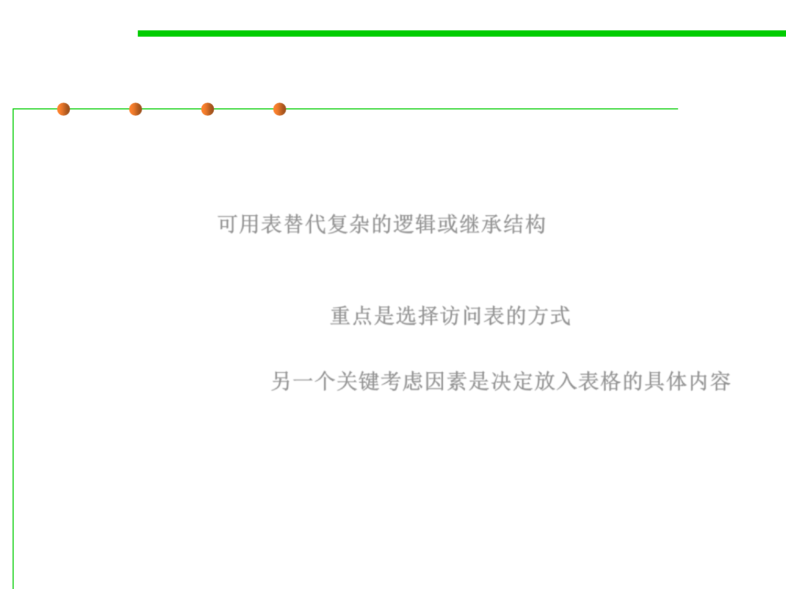

Key Points
6.3 Maintainability-Oriented Construction Techniques
▪ Tables provide an alternative to complicated logic and inheritance
structures. If you find that you‘re confused by a program’s logic or
inheritance tree, ask yourself whether you could simplify by using
a lookup table. 可用表替代复杂的逻辑或继承结构
▪ One key consideration in using a table is deciding how to access
the table. You can access tables by using direct access, indexed
access, or stair-step access. 重点是选择访问表的方式
▪ Another key consideration in using a table is deciding what exactly
to put into the table. 另一个关键考虑因素是决定放入表格的具体内容
。
详见《代码大全》